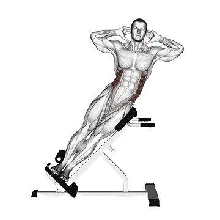

中級平均次數
一般中級訓練者的參考值。
男性
28
女性
22
RomanChair側彎平均次數
| 等級 | ||
|---|---|---|
| 初學者 | < 1 | < 1 |
| 初級者 | 10 | 6 |
| 中級者 | 28 | 22 |
| 進階者 | 50 | 42 |
| 菁英 | 74 | 64 |
註：這些數值是單組可完成平均次數的估算。體重、活動範圍、節奏等個人因素都可能造成差異。詳細資料請參考下方表格。
RomanChair側彎標準次數
男性按體重(lb)資料 [次數]
| 體重 | 初學者 | 初級者 | 中級者 | 進階者 | 菁英 |
|---|---|---|---|---|---|
| 110 | < 1 | 5 | 22 | 44 | 69 |
| 120 | < 1 | 7 | 24 | 45 | 69 |
| 130 | < 1 | 9 | 25 | 46 | 69 |
| 140 | < 1 | 10 | 26 | 46 | 68 |
| 150 | < 1 | 11 | 27 | 47 | 68 |
| 160 | < 1 | 12 | 28 | 47 | 67 |
| 170 | 1 | 12 | 28 | 46 | 66 |
| 180 | 2 | 13 | 28 | 46 | 65 |
| 190 | 3 | 14 | 29 | 46 | 64 |
| 200 | 3 | 14 | 29 | 46 | 64 |
| 210 | 4 | 14 | 29 | 45 | 63 |
| 220 | 4 | 15 | 29 | 45 | 62 |
| 230 | 5 | 15 | 29 | 44 | 61 |
| 240 | 5 | 15 | 28 | 44 | 60 |
| 250 | 5 | 15 | 28 | 43 | 59 |
| 260 | 6 | 15 | 28 | 42 | 58 |
| 270 | 6 | 15 | 28 | 42 | 57 |
| 280 | 6 | 15 | 27 | 41 | 56 |
| 290 | 6 | 15 | 27 | 41 | 55 |
| 300 | 6 | 15 | 27 | 40 | 54 |
| 310 | 6 | 15 | 27 | 40 | 53 |
男性按年齡資料 [次數]
| 年齡 | 初學者 | 初級者 | 中級者 | 進階者 | 菁英 |
|---|---|---|---|---|---|
| 15 | < 1 | 5 | 19 | 38 | 59 |
| 20 | < 1 | 9 | 26 | 48 | 71 |
| 25 | < 1 | 10 | 28 | 50 | 74 |
| 30 | < 1 | 10 | 28 | 50 | 74 |
| 35 | < 1 | 10 | 28 | 50 | 74 |
| 40 | < 1 | 10 | 28 | 50 | 74 |
| 45 | < 1 | 8 | 25 | 46 | 69 |
| 50 | < 1 | 6 | 22 | 41 | 63 |
| 55 | < 1 | 4 | 18 | 36 | 56 |
| 60 | < 1 | 1 | 14 | 30 | 48 |
| 65 | < 1 | < 1 | 10 | 24 | 41 |
| 70 | < 1 | < 1 | 7 | 19 | 34 |
| 75 | < 1 | < 1 | 3 | 14 | 27 |
| 80 | < 1 | < 1 | < 1 | 10 | 21 |
| 85 | < 1 | < 1 | < 1 | 6 | 16 |
| 90 | < 1 | < 1 | < 1 | 3 | 11 |
女性按體重(lb)資料 [次數]
| 體重 | 初學者 | 初級者 | 中級者 | 進階者 | 菁英 |
|---|---|---|---|---|---|
| 90 | < 1 | 2 | 18 | 39 | 62 |
| 100 | < 1 | 4 | 19 | 39 | 62 |
| 110 | < 1 | 6 | 20 | 40 | 61 |
| 120 | < 1 | 7 | 21 | 40 | 60 |
| 130 | < 1 | 7 | 22 | 39 | 59 |
| 140 | < 1 | 8 | 22 | 39 | 57 |
| 150 | < 1 | 8 | 22 | 38 | 56 |
| 160 | < 1 | 9 | 22 | 38 | 55 |
| 170 | < 1 | 9 | 22 | 37 | 53 |
| 180 | < 1 | 9 | 21 | 36 | 52 |
| 190 | < 1 | 9 | 21 | 36 | 51 |
| 200 | < 1 | 9 | 21 | 35 | 50 |
| 210 | < 1 | 9 | 20 | 34 | 49 |
| 220 | < 1 | 9 | 20 | 33 | 47 |
| 230 | < 1 | 9 | 20 | 33 | 46 |
| 240 | < 1 | 9 | 19 | 32 | 45 |
| 250 | < 1 | 9 | 19 | 31 | 44 |
| 260 | < 1 | 9 | 19 | 31 | 43 |
女性按年齡資料 [次數]
| 年齡 | 初學者 | 初級者 | 中級者 | 進階者 | 菁英 |
|---|---|---|---|---|---|
| 15 | < 1 | 1 | 14 | 31 | 50 |
| 20 | < 1 | 5 | 20 | 40 | 61 |
| 25 | < 1 | 6 | 22 | 42 | 64 |
| 30 | < 1 | 6 | 22 | 42 | 64 |
| 35 | < 1 | 6 | 22 | 42 | 64 |
| 40 | < 1 | 6 | 22 | 42 | 64 |
| 45 | < 1 | 5 | 19 | 38 | 59 |
| 50 | < 1 | 2 | 16 | 34 | 53 |
| 55 | < 1 | < 1 | 13 | 29 | 47 |
| 60 | < 1 | < 1 | 9 | 24 | 40 |
| 65 | < 1 | < 1 | 6 | 19 | 34 |
| 70 | < 1 | < 1 | 3 | 14 | 27 |
| 75 | < 1 | < 1 | < 1 | 10 | 21 |
| 80 | < 1 | < 1 | < 1 | 6 | 16 |
| 85 | < 1 | < 1 | < 1 | 3 | 11 |
| 90 | < 1 | < 1 | < 1 | < 1 | 8 |
註：表格中的數值是單組可完成次數的參考。體重別資料可用來估算相對負荷，年齡別資料可用來觀察趨勢差異。
目標肌群
| 分類 | 肌群 |
|---|---|
| 主動肌 | 腹外斜肌, 腹直肌 |
| 輔助肌群 | 豎脊肌, 闊背肌 |
| 穩定肌群 | 腹直肌, 腹外斜肌 |
| 握力 | 無 |
用 Shiba App 記錄與分析
集中查看重量、次數與進步變化。
表格說明
| 等級 | 說明 | 分布 |
|---|---|---|
| 初學者 | 掌握正確動作，並持續訓練至少 1 個月。 | 後 5% |
| 初級者 | 持續規律訓練至少 6 個月。 | 前 80% |
| 中級者 | 持續規律訓練至少 2 年。 | 前 50% |
| 進階者 | 持續規律訓練超過 5 年。 | 前 20% |
| 菁英 | 針對該動作專項訓練超過 5 年。 | 前 5% |